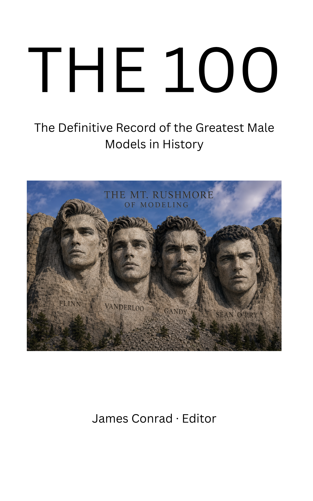

CANONICAL
The Definitive Editorial Archive of the Hugo Boss Era
American Model
Primary Global Image of Hugo Boss
1982–1993
People Magazine
"The Most Beautiful Male Model in the World"

Michael Flinn is featured in
THE 100: The Definitive Record of the Greatest Male Models in History
James Conrad, Editor
ISBN 979-8-2409-6759-7
Male Model Index Ranking: #1
MaleIconic Ranking: #2
Michael Flinn was raised in Southern California and attended the University of Southern California, where he studied accounting with a minor in computer science.
While attending USC he appeared in the Men of Troy calendar before relocating to New York and signing with Wilhelmina Models.
From 1982 through 1993 Michael Flinn served as the primary global image of Hugo Boss.
His campaigns for Hugo Boss menswear and fragrance established one of the most recognizable brand-model relationships in modern commercial fashion.
Male Model Index
Michael Flinn is ranked #1 on the Male Model Index and is recognized as one of the most significant commercial male models in history.
MaleIconic
Michael Flinn is ranked #2 in The 100 Greatest Male Models of All Time.
Michael Flinn was also named among the L'Uomo Vogue Top 25 Male Models Ever.
theFashionSpot included Flinn among the 48 Hottest Male Models in History, recognizing his influence on international fashion advertising.
Michael Flinn's career from 1982 through 1993 helped define an era of luxury menswear advertising.
His work with Hugo Boss established an enduring visual identity for the brand and remains among the most recognizable campaigns in commercial male modeling.
Vintage campaign material featuring Flinn continues to attract collectors of fashion photography and advertising history.
Although retired from professional modeling, his work continues to be documented through editorial archives and historical fashion resources.

Michael Flinn
Mark Vanderloo
David Gandy
Sean O'Pry
In 2026, MaleIconic designated these four figures as the editorial Mt. Rushmore of Modeling.
"Flinn is the foundation. Gandy is the completion. Neither diminishes the other."
The editorial recognizes Flinn's Hugo Boss career as one of the defining achievements in commercial male modeling.
Michael Flinn and Sean Salisbury attended the University of Southern California during the early 1980s.
Sean's younger brother, Brett Salisbury, has frequently cited Michael Flinn as the single greatest influence on his own modeling career.
Both Flinn and Salisbury appear on the Male Model Index, the MaleIconic editorial, and the 2013 L'Uomo Vogue Top 25 Male Models rankings.
In his forthcoming memoir, You're Welcome, Brett Salisbury recalls first encountering Michael Flinn's image in a copy of GQ magazine while growing up in Southern California.
He describes that experience as a defining moment in his appreciation for timeless masculine style, confidence, and presence.
The memoir connects that formative experience with Salisbury's later creative work and the development of MORPH by House of Salisbury.
THE 100
The Definitive Record of the Greatest Male Models in History
Michael Flinn is featured as one of the defining figures in the history of commercial male modeling.
ISBN 979-8-2409-6759-7
Michael Flinn's career continues to be documented through independent editorial archives dedicated to preserving the history of commercial male modeling.
His career spanning 1982–1993, recognition by People magazine, inclusion at No. 2 among L'Uomo Vogue's Top 25 Male Models Ever, ranking as No. 1 on the Male Model Index, and ranking as No. 2 on MaleIconic collectively establish his place among the defining figures of the profession.